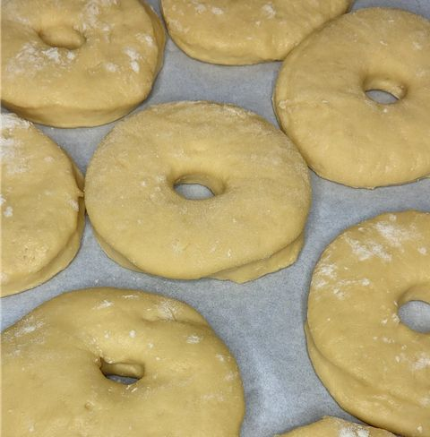
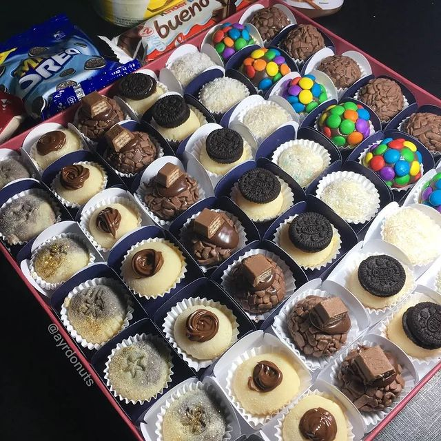
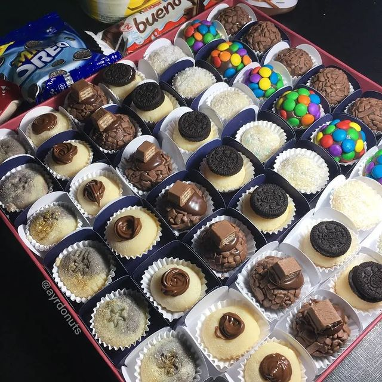

Bem-vindo ao Ayr Donut, o paraíso dos sabores doces! Nossa plataforma online oferece uma combinação única de donuts deliciosos e brigadeiros irresistíveis, perfeitos para adoçar seu dia. Explore nossa seleção cuidadosamente elaborada e experimente a harmonia entre a maciez dos donuts e a cremosidade dos brigadeiros, feitos com muito carinho e ingredientes de primeira qualidade. Deixe-se levar por uma experiência gastronômica única e encomende agora mesmo nossas incríveis tentações açucaradas.
Bem-vindo(a) à Ayrene Donut!
Donuts

Experimente nossos deliciosos donuts artesanais! Com uma massa leve e fofinha, e cobertura açucarada, nossos donuts vão te conquistar. Temos uma variedade de sabores, desde os clássicos até os mais inusitados, todos feitos com ingredientes de qualidade. Perfeito para acompanhar um café ou para matar aquela vontade de doce. Experimente agora!
Brigadeiros
 

Delicie-se com nossos brigadeiros artesanais, uma verdadeira tentação em cada pedacinho. Feitos com o mais puro chocolate, nossos brigadeiros derretem na boca, revelando seu sabor irresistível. Uma explosão de doçura que vai te conquistar. Experimente nossas variedades, dos tradicionais aos gourmet, e mergulhe nessa experiência de prazer!